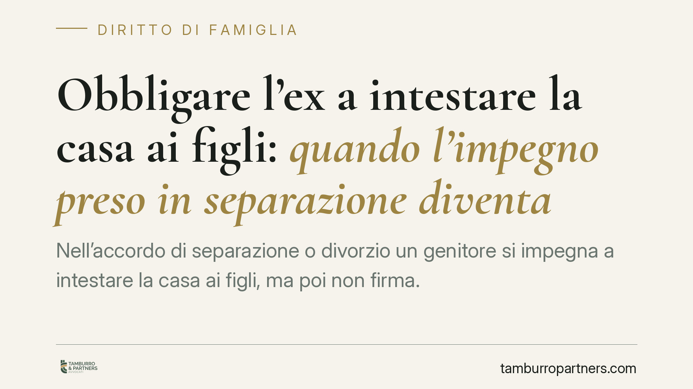

Obbligare l'ex a intestare la casa ai figli: quando l'impegno preso in separazione diventa eseguibile
Nell'accordo di separazione o divorzio un genitore si impegna a intestare la casa ai figli, ma poi non firma. L'altro può ottenere il trasferimento anche senza il suo consenso, ricorrendo all'esecuzione in forma specifica prevista dall'articolo 2932 del Codice civile. La condizione decisiva è una sola: che il bene sia stato descritto con precisione nell'accordo omologato.

Il caso: dall'impegno all'inadempimento
Capita spesso. In sede di separazione o divorzio i coniugi concordano che la casa familiare, o un altro immobile, venga intestata ai figli. L'accordo viene omologato dal giudice o recepito nella sentenza. Poi, al momento di andare dal notaio, il genitore obbligato si sfila: non si presenta, temporeggia, contesta.
La domanda pratica è netta: l'altro genitore, o i figli stessi ormai maggiorenni, possono ottenere il trasferimento anche senza la firma dell'inadempiente? La risposta, a determinate condizioni, è affermativa.
Inquadramento normativo
Occorre partire da una distinzione che cambia tutto. Un conto è la promessa di donazione: la donazione richiede l'atto pubblico a pena di nullità (art. 782 c.c.), e la mera promessa di donare non produce alcun obbligo giuridicamente coercibile. Chi promette di regalare un bene, in sostanza, non è vincolato.
Altra cosa è l'obbligo negoziale assunto negli accordi di separazione o divorzio. Qui il trasferimento in favore dei figli non è una liberalità fine a sé stessa: ha una causa specifica, legata alla sistemazione complessiva dei rapporti patrimoniali tra i coniugi e all'assolvimento dei doveri verso la prole. È un vero e proprio obbligo contrattuale, come tale coercibile.
La cornice consolidata è quella tracciata dalle Sezioni Unite della Cassazione con la sentenza n. 21761 del 29 luglio 2021: gli accordi di separazione e divorzio possono contenere trasferimenti immobiliari immediati in favore dei figli, sono validi ed è ammessa la loro trascrizione. Non servono passaggi ulteriori davanti al notaio se l'atto è già perfezionato nell'accordo.
Su questa base si innesta l'art. 2932 c.c. sull'esecuzione in forma specifica dell'obbligo di concludere un contratto: se chi è obbligato a trasferire un immobile non adempie, l'avente diritto può chiedere al giudice una sentenza che produca gli effetti del contratto non concluso. In pratica, la sentenza tiene luogo dell'atto notarile mancante e consente l'intestazione anche contro la volontà dell'inadempiente.
In questa direzione si colloca anche una recente pronuncia di merito del Tribunale di Latina (sentenza da verificare quanto a numero ed anno esatti), che ribadisce come l'impegno a trasferire un immobile ai figli assunto in separazione non sia una donazione, bensì un obbligo azionabile ex art. 2932 c.c., purché il bene sia individuato con precisione.
Perché la descrizione del bene è decisiva
Qui sta il punto tecnico che spesso vanifica il diritto. La sentenza costitutiva ex art. 2932 c.c. può sostituire il consenso dell'obbligato solo se il bene da trasferire è individuato in modo completo e univoco: dati catastali, confini, quote di proprietà, pertinenze.
Se l'accordo si limita a formule generiche — "la casa di famiglia", "l'appartamento in città" — il giudice non ha elementi sufficienti per emettere una pronuncia trasferitiva. L'obbligo esiste, ma diventa di fatto ineseguibile in forma specifica, e resta solo la strada del risarcimento, spesso di scarsa utilità pratica.
Implicazioni pratiche
Per il genitore beneficiario, o per i figli, la conseguenza è duplice. Da un lato, l'inadempimento dell'ex non è un ostacolo insuperabile: esiste un rimedio giudiziale che porta all'intestazione. Dall'altro, tutto dipende da come è stato scritto l'accordo a suo tempo. Un testo redatto con cura è già metà del risultato; un testo approssimativo può costare anni di contenzioso.
Per chi sta ancora negoziando la separazione, il messaggio è opposto ma speculare: pretendere clausole precise prima di firmare, non dopo.
Cosa fare in concreto
- Recuperate l'accordo omologato o la sentenza e verificate se il bene è descritto con dati catastali, quote e pertinenze. È il primo elemento da valutare.
- Fate una visura catastale e ipotecaria aggiornata dell'immobile, per accertare titolarità, eventuali ipoteche o trascrizioni pregiudizievoli sopravvenute.
- Inviate una diffida formale all'ex obbligato, invitandolo a stipulare l'atto entro un termine congruo, così da documentare l'inadempimento.
- In assenza di riscontro, promuovete l'azione ex art. 2932 c.c. davanti al tribunale competente, chiedendo la sentenza che tenga luogo del contratto non concluso.
- Se l'accordo è generico, consigliamo di valutare preventivamente con un legale la percorribilità dell'azione, per non avviare un giudizio destinato a esiti incerti.
Ogni situazione va esaminata sui documenti concreti: la formulazione dell'accordo originario fa la differenza tra un diritto azionabile e una pretesa difficilmente tutelabile.
---
Contributo informativo a cura di Tamburro & Partners Avvocati - Avv. Giuseppe Tamburro. Non costituisce parere legale.
Ogni famiglia ha il suo equilibrio.
Separazione, divorzio, affidamento, assegno: se vuoi un confronto riservato su una specifica situazione, scrivi allo studio. Ti rispondiamo entro un giorno lavorativo.